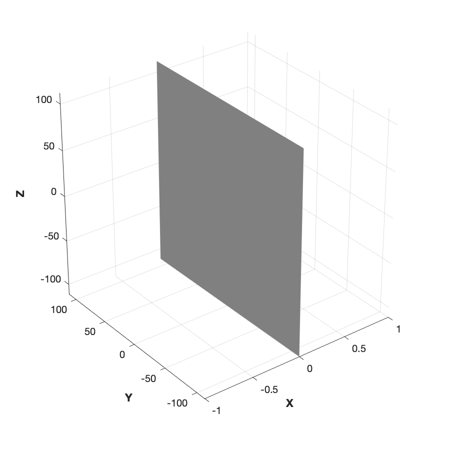
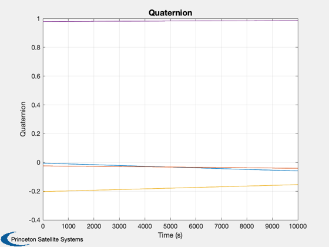
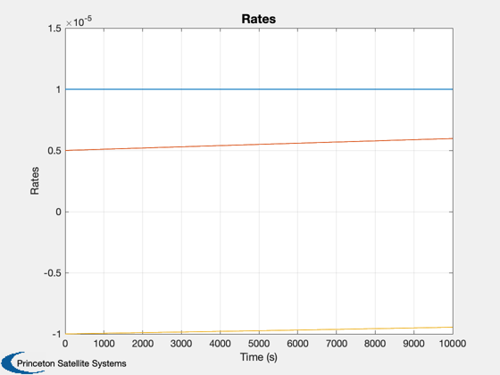
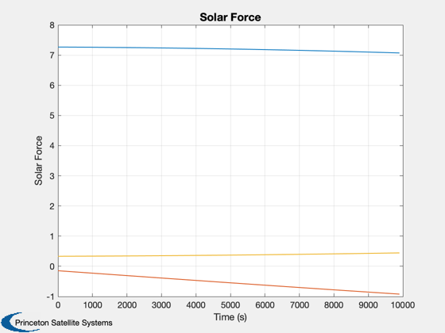
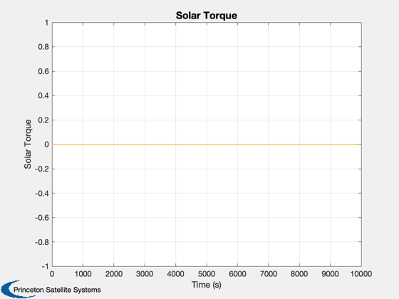

Sail attitude evolution under disturbances. No orbit dynamics.
Combines a CAD model with the disturbance model and a simple RHS. The sail starts out in a sun-pointing attitude with an offset and nonzero body rates.
Functions demonstrated: FlatPlate.m / FlatSail.mat, the CAD model SailDisturbance.m, the full disturbance model SailEnvironment.m, the environment model FRB.m, rigid body dynamics integrated with RK4
Since version 7. ------------------------------------------------------------------------ See also DrawSCPlanPlugIn, AU2Q, QMult, Constant, Plot2D, RK4, Unit, JD2000, RARP2A, RARP2E, El2RV, CEcl2Eq, QSail, DisturbanceStruct, EnvironmentStruct, ProfileStruct, SailDisturbance, SailEnvironment ------------------------------------------------------------------------
Contents
- Load and view the sail model
- Hold at a single point in interplanetary orbit
- Profile is stored in p for disturbance function
- Vectors must be in ECI so transform from the ecliptic
- Quaternion (sun pointing with an offset)
- Initial body rate (rad/s)
- Create the data structure
- Turn off unwanted disturbances
- Turn on solar
- Orbiting the sun
- Simulation loop
- Store mass properties for speed
- Set up plotting arrays
- Create plots
%------------------------------------------------------------------------------- % Copyright (c) 2006 Princeton Satellite Systems, Inc. % All rights reserved. %------------------------------------------------------------------------------- %-----------------------------
Load and view the sail model
%----------------------------- g = load('FlatSail.mat'); DrawSCPlanPlugIn('initialize',g); view(3); axis equal; axis square; clear SailDisturbance %-----------------------------------------------
Hold at a single point in interplanetary orbit
%----------------------------------------------- aU = Constant('au'); mu = Constant('mu sun'); rP = 0.25*aU; rA = aU; a = RARP2A( rA, rP ); e = RARP2E( rA, rP );
Profile is stored in p for disturbance function
%------------------------------------------------
p = ProfileStruct;
[p.r, p.v] = El2RV([a,0,0,0,e,0], [], mu );
p.jD = JD2000;
Vectors must be in ECI so transform from the ecliptic
%------------------------------------------------------
c = CEcl2Eq;
p.r = c*p.r;
p.v = c*p.v;
Quaternion (sun pointing with an offset)
%-----------------------------------------
q0 = QMult(QSail( -Unit(p.r), p.r, p.v ), AU2Q(0.05,[0;1;0]) );
Initial body rate (rad/s)
%-------------------------- w0 = [0.001;0.0005;-0.001]/100; %--------------------------
Create the data structure
%--------------------------
d = DisturbanceStruct;
d = EnvironmentStruct( d );
Turn off unwanted disturbances
%-------------------------------
d.aeroOn = 0.0;
d.albedoOn = 0.0;
d.magOn = 0.0;
d.radOn = 0.0;
d.ggOn = 0.0;
Turn on solar
%--------------
d.solarOn = 1.0;
Orbiting the sun
%----------------- d.planet = 'Sun';
Simulation loop
%----------------
t = 0;
dT = 100;
x = [q0;w0];
Store mass properties for speed
%--------------------------------
inr = g.mass.inertia;
invInr = inv(inr);
Set up plotting arrays
%----------------------- nPts = 100; xPlot = zeros(7,nPts+1); tPlot = zeros(1,nPts+1); fPlot = zeros(3,nPts); tqPlot = zeros(3,nPts); xPlot(:,1) = x; for k = 1:nPts % Store quaternion in p for disturbances %--------------------------------------- p.q = x(1:4); % Compute the disturbances. % The inputs are ( cad model, profile structure, function control structure ) %---------------------------------------------------------------------------- e = SailEnvironment( d.planet, p, d ); [fS,tS] = SailDisturbance( g, p, e, d ); fPlot(:,k) = fS.total; tqPlot(:,k) = tS.total; % Integrate the rigid body dynamics %---------------------------------- x = RK4( 'FRB', x, dT, t, inr, invInr, tS.total ); t = t+dT; % Store %------ xPlot(:,k+1) = x; tPlot(:,k+1) = t; end
Create plots
%------------- Plot2D(tPlot,xPlot(1:4,:),'Time (s)','Quaternion'); Plot2D(tPlot,xPlot(5:7,:),'Time (s)','Rates'); Plot2D(tPlot(1:end-1),fPlot,'Time (s)','Solar Force'); Plot2D(tPlot(1:end-1),tqPlot,'Time (s)','Solar Torque'); %-------------------------------------- % PSS internal file version information %--------------------------------------   